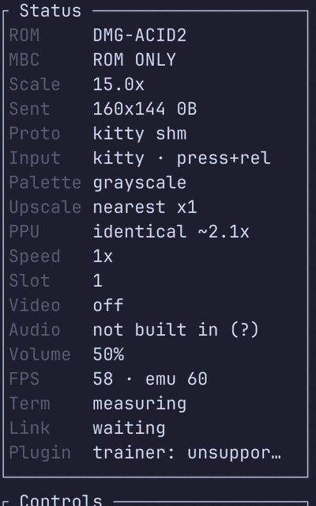

Standing page · TerminalGB
Performance, and what it buys.
TerminalGB is cycle-accurate, passes every Mooneye acceptance test on its exact engine, and runs Pokémon Blue at 314× real time on one desktop core. Peanut-GB, an emulator built for speed, is 17% faster on the same game and passes 12 of those 66 tests. On a microcontroller board, bare metal, it runs original Game Boy games at full speed.
The headline, against Peanut-GB
Measured 18–19 Nov 2026, TerminalGB and Peanut-GB v1.3.0 interleaved in one session. One P-core, pinned, thread CPU clock, best of five rounds, load 1.8–2.4. Every run starts from reset on a DMG, picture on, no sound. 1× real time is 59.7275 frames a second.
standardidenticalidentical. Peanut-GB: 12/66.One core, × real time
Within 14–17% of Peanut-GB on games, with the fast engine
| Cartridge, engine | Peanut-GB | Before | Now | Gain |
|---|---|---|---|---|
Pokémon Blue, standard | 367× | 298× | 314× | +5% |
Kirby's Dream Land 2, standard | 292× | 237× | 256× | +8% |
Blargg cpu_instrs, standard | 266× | 135× | 177× | +31% |
Pokémon Blue, identical | 367× | 87× | 114× | +31% |
Kirby's Dream Land 2, identical | 292× | 57× | 79× | +39% |
Blargg cpu_instrs, identical | 266× | 58× | 81× | +39% |
Peanut-GB has one engine, so its figure repeats. standard draws a whole
scanline at once, as Peanut-GB does; identical walks the hardware's
pixel pipeline dot by dot, which Peanut-GB does not do at all. On the two games,
Peanut-GB is 14–17% faster than standard. On cpu_instrs,
which never halts and so measures the CPU alone, it is 1.5× faster.
The gap is the core. Counted with hardware counters, TerminalGB's renderer costs
about what Peanut-GB's does, but its core runs 1.5–2× the host instructions per
emulated cycle: it ticks the timer, the sound chip and DMA on every memory access,
which is what passing mem_timing and Mooneye takes.
Pokémon Blue on standard was published here as 369× in August. That was
a different configuration — pixels off, from a save state — and it does not
reproduce on today's code; the like-for-like figure before this round was 292–298×.
cpu_instrs.
core_bench --no-default-features, GB_MODEL=dmg,
taskset -c 4, Peanut-GB built -O3 with its LCD on.
What the extra time buys
The same test ROMs and the same pass rule for both emulators, on a DMG. Nothing on this page changed a single result: every accuracy baseline is the same before and after the speed work.
| Suite | Peanut-GB | identical | standard |
|---|---|---|---|
| Blargg and dmg-acid2 | 13 / 18 | 18 / 18 | 18 / 18 |
| Mooneye acceptance, DMG | 12 / 66 | 66 / 66 | 58 / 66 |
| Mooneye emulator-only (MBC1/2/5) | 23 / 28 | 28 / 28 | 28 / 28 |
| Mealybug Tearoom, DMG references | 0 / 24 | 11 / 24 | 1 / 24 |
| Game Boy Color | no | yes | yes |
| Sound chip, cycle-timed | no | yes | yes |
Peanut-GB is fast because it leaves things out, on purpose: an interrupt costs no cycles, OAM DMA is an instant copy, mode 3 is always the same length, and the peripherals step once per instruction rather than per memory access. It is built to run a Game Boy on a microcontroller, and it does that well. It also uses about a third of the memory: ~50 KB an instance against TerminalGB's ~176 KB.
Round seven: what worked and what did not
Every change is exact: frame and work-RAM hashes unchanged on 56 workloads in both engines, and every external baseline unchanged — Mooneye, Blargg, acid2, Mealybug, all 13 c-sp suites, SameSuite and gbselftest.
The big one
Eight dots at a time
Once the exact engine's pixel pipeline is in its steady eight-dot rhythm, with no
sprite due, no window and nothing pending, the next eight dots are always the same
eight steps. It now takes them in one go. +25–35% on
identical. A line with a mid-line write still goes dot by
dot from wherever it is.
Smaller wins
Fewer detours
Work RAM and HRAM read directly while no DMA is on a bus, and the opcode fetch
using the same path: +31% on cpu_instrs, which runs from RAM.
standard composing a line a byte per pixel and writing colour once:
+2–3%. The exact engine owed its dots through modes 0–2: 1–10%.
Measured and dropped
One countdown per access
Folding the timer, sound and DMA checks into a single compare per memory access
was ±1% on standard and 3–7% slower on identical. Backed
out.
The profile lied
The sprite FIFO
A profile put 19.5% of an exact frame on rotating the sprite FIFO. Making it a ring buffer was 2–3% slower on its own: the share was sampling skid from the dispatch around it. It stayed, because the eight-dot step needs it — without the ring, that step loses most of its gain.
Speed flags
Documented shortcuts, each behind a named switch, off by default
Everything above is the accurate machine. A run that is driving the machine
rather than judging it can take liberties, each one a named flag. Before this round,
the speed preset took Blue on standard from 297× to 317×.
On the microcontroller below it is worth much more. No accuracy gate can reach it.
On a microcontroller
TerminalGB bare-metal on the Pokéwalker's board: a Waveshare ESP32-S3, one Xtensa LX7 core at 240 MHz for the emulator, the other for the screen. Mean ms per frame over 300 frames of real play, from real saves. Measured 18–19 Nov 2026, before round seven.
| Cartridge | standard + speed, on screen | fps | identical |
|---|---|---|---|
| Pokémon Blue | 14.8 ms | 67 | 108.4 ms |
| Kirby's Dream Land 2 | 16.5 ms | 60 | 139.4 ms |
| dmg-acid2 | 10.1 ms | 99 | 139.5 ms |
| Pokémon Gold, in colour | 29.9 ms | 33 | 143.9 ms |
A frame has 16.74 ms. Original Game Boy games run at full speed, Kirby only just: its average fits, its worst frames reach 21 ms. A Game Boy Color game runs at 55% of real time, and the exact engine at 12–15%, on every cartridge. The final frame hash on the board matches a desktop run of the same inputs, every time.
What the board tricks gave
Fast memory, and a second core
- Hot code in IRAM (about 80 KB): −15 to −21% on
standard. - Framebuffer in internal SRAM: −2.3 to −3.0 ms a frame.
- The screen on the second core: converting, scaling and sending the picture costs that core about 10 ms a frame and the emulator's core nothing.
- The machine's 51 KB of state in internal SRAM, and the ROM in PSRAM rather than flash: no difference. The data cache already holds them.
Peanut-GB on the same board
About twice as fast, and grey
Tuned the same way, Peanut-GB runs Blue in 7.0 ms and Kirby in 6.9 ms. It plays Pokémon Gold only as a grey original-Game Boy game, in 7.9 ms; TerminalGB plays it in colour. It passes 12 of 66 Mooneye tests.
The board widens the gap. On the desktop, deep out-of-order cores hide most of TerminalGB's extra instructions; an in-order microcontroller core pays for every one.
No sound reaches the board's speaker yet: the sound chip runs and makes samples, and that cost is in every figure above. A second run on the board, with round seven's speed-ups, is coming.
Against SameBoy and PyBoy
Measured in August 2026, before round seven. One machine, one core, one cartridge, one frame count, one clock. Every side built with its own release configuration and its rendering and sound switched off.
SameBoy is the accuracy reference this project settles disputes against, and
TerminalGB is 9.5× faster with both cycle-accurate. Picture on, each against the
engine that draws the same way, the September figure is 1.9×: TerminalGB's
identical at 79× against SameBoy's 41×, before round seven took
identical up by another 31–39%.
Where the remaining gap is
It is entirely the core
Costed by turning each part on and off on both sides in the same session:
| Component | PyBoy | Ours |
|---|---|---|
| Core only | 0.0198–0.0298 | 0.0672 |
| The renderer, on top | +0.0374 | +0.0434 |
| The APU, silent | — | +0.0034 |
| The APU, producing samples | +0.0255 | +0.0400 |
Our renderer is within 16% of theirs, and our APU is an order of magnitude cheaper when silent — which is the configuration a collector actually runs in. The whole difference is peripheral bookkeeping happening once per instruction here and once per horizon there.
The claim that did not hold
43×, not 1,000×
The figure in circulation is that a fast Game Boy interpreter reaches
1,000–10,000× real time. On this hardware, with this method, the
reference cycle-accurate emulator reaches 43× — and it is not a slow
implementation. It is written in C, compiled with -ffast-math and
LTO, and it is the accuracy oracle this project uses to settle disputes.
Some arithmetic for why: 1,000× is 16.7 µs for 70,224 emulated T-cycles — about one host clock per Game Boy T-cycle. 10,000× would be a tenth of a host clock per T-cycle, which is not an interpreter at all.
There is no technique to copy from SameBoy here, because we are already ahead of it. That is not a boast; it is what closed the question.
What twenty cores do
The unit that matters to a measurement campaign is not ms/frame — it is how many
measurements fit in a day. Measured August 2026, standard, pixels off.
| Workers | Frames/s | × real time | Per instance |
|---|---|---|---|
| 1 | 16,590 | 278× | 0.0602 ms |
| 4 | 63,687 | 1,066× | 0.0624 ms |
| 8 | 126,633 | 2,120× | 0.0627 ms |
| 12 | 153,455 | 2,569× | 0.0679 ms |
| 16 | 197,543 | 3,307× | 0.0727 ms |
| 20 | 223,073 | 3,735× | 0.0770 ms |
Four cores are already past 1,000×. The per-instance figure rises only 28% from one worker to twenty, which is what silicon-limited rather than contention-limited looks like on a box with 8 P-cores and 12 E-cores.
Two different 1,000× targets, and they are not the same work
Aggregate 1,000× is already met, on four cores. Single-core 1,000× is about 3× away and is not available by shaving: pricing the per-access bus tick at +21% of a collector's frame, the whole APU at +16.7% and the whole timer at +14%, deleting all three outright — which would not be an emulator any more — is about 1.9×, roughly 550×. Everything else is a few per cent each. It needs a different execution model, not another optimisation pass. When somebody quotes a throughput figure for this emulator, they should say which one they mean.
Two picture engines, and what exactness costs
Not a quality setting and not an appearance setting. On ordinary games the two produce byte-identical framebuffers; the only axis between them is exactness against speed.
The standard engine draws a whole scanline in one step at the end of
mode 3, from whatever the registers hold at that instant. The
identical engine walks the real hardware pixel pipeline dot by dot —
the background fetcher, the eight-pixel FIFO, sprite fetches, the window restart,
the SCX & 7 discard. Only the second can represent "the wrong
tile source for one dot in the middle of a line", which is why only the second
can catch that.

identical, what it
is costing right now. P switches between the two without a pause or
a reload — both engines share every register and the framebuffer, and
identical rebuilds its pipeline at the head of the next scanline.
| Reference suite | standard |
identical |
|---|---|---|
| Mooneye GB (acceptance + emulator-only) | 95 / 103 | 103 / 103 |
| Mealybug Tearoom, pixel-exact rows | 3 / 79 | 29 / 79 |
| Gambatte | 3,176 / 5,320 | 3,622 / 5,320 |
| GBMicrotest | 252 / 513 | 339 / 513 |
| AGE | 3 / 59 | 11 / 59 |
| Mooneye (wilbertpol) | 62 / 122 | 82 / 122 |
| Scribbltests | 7 / 13 | 9 / 13 |
| Frame cost, Pokémon Blue from reset, picture on, one P-core | 0.0533 ms | 0.1475 ms |
The accurate engine costs 2.8 times as much per frame and is still
under 1% of a frame's 16.7 ms budget on a desktop core. That is cheap enough to
be the default, and it is. It is not free everywhere: on the PSP frontend the
emulator pins standard, because an exact picture nobody can play is
worth nothing.
The method, and three ways of getting it wrong
Four things about the benchmark command are load-bearing, and three of them were learned by producing a wrong answer first.
One
Pin it
8 P-cores at 5.3 GHz, 12 E-cores at 4.6 GHz. A fresh process lands on whichever the scheduler picks, so the per-instance figure moves by 15% or more between invocations of the identical binary — even though it is CPU time.
Two
Report the load average
The benchmark reports thread CPU time and prints the wall figure beside it so the gap is visible. Contention still reaches it through frequency scaling: the same binary measured 0.0581 ms/frame at load 0.3 and 0.0909 at load 16 — a 56% spread, on the same code.
Three
Use long rounds
2,000-frame rounds are mostly the frequency governor ramping up after process start, and they reorder the variants between runs — which looks exactly like a real difference between them.
Four
Know which tool you reached for
The obvious "the core stands alone" demo reads 90× rather than 288×, and that is correct: it renders every pixel, hashes the whole framebuffer, round-trips a save state and runs 60 more frames to check it. It is not a throughput benchmark and does not claim to be.
The gaps
Each remaining red row has a named reason, and one of them must stay red forever.
- Mid-scanline picture timing is the ceiling. Most of the Mealybug Tearoom suite is red even on the exact engine. 45 of its 79 rows cannot be won by picture work at all: 27 need Nintendo's boot ROM in video RAM, 8 compare a greyscale render against a colour reference, and 7 are a ROM-versus-reference mismatch inside the suite. The honest denominator is 34.
- Nine Mooneye rows are other consoles — machine variants deliberately not emulated, pinned as failures on purpose rather than removed from the denominator.
- One test must stay red. A Color memory-corruption defect does not exist in Color silicon, so real hardware fails that ROM too. Passing it would be the bug.
- Mealybug's score is not a pixel count. That suite compares by shade-rank distance, which is deliberately unforgiving — a frame introducing one extra distinct shade can report on the order of a whole screen "wrong" regardless of how much of it is perfect. Those figures are treated as an ordering signal, never converted into a percentage.
- On a microcontroller, only the fast engine keeps up, and only for original Game Boy games. On the ESP32-S3 a Color game runs at 55% of real time and the exact engine at 12–15%. Its likeliest next step is drawing lines with nothing written mid-line by the fast path, which has not been built.
- Single-core 1,000× is not reachable by optimisation. Named above with the arithmetic: deleting the bus tick, the APU and the timer entirely gets to roughly 550×, and would not be an emulator.
- The SameBoy and PyBoy comparison was run on the fast engine. That is the fair comparator against two emulators with their rendering off. A bare run of the same command today uses the exact engine and reads several times slower — a different measurement, not a regression.
Where these numbers come from. Every throughput figure was produced
by the project's own core_bench example on one machine, pinned to a
named core class, reporting thread CPU time, with the load average recorded beside
it. Every comparison against another emulator was run interleaved in a single session,
best of three or five rounds, with every side built in its own release configuration.
Board figures are mean milliseconds per frame over 300 frames, with the board's final
frame hash checked against a desktop run.
The accuracy table is read from the repository's checked-in conformance baselines, which are the expectations themselves, so a count and a claim cannot drift apart. There is no overall percentage accuracy figure here and no comparison against anybody's published marketing number.
The bug that made the exact engine worth its cost has its own write-up: the double-speed bug that cost 2,304 pixels. The rest of the project is on the TerminalGB project page.
← Back to devlog